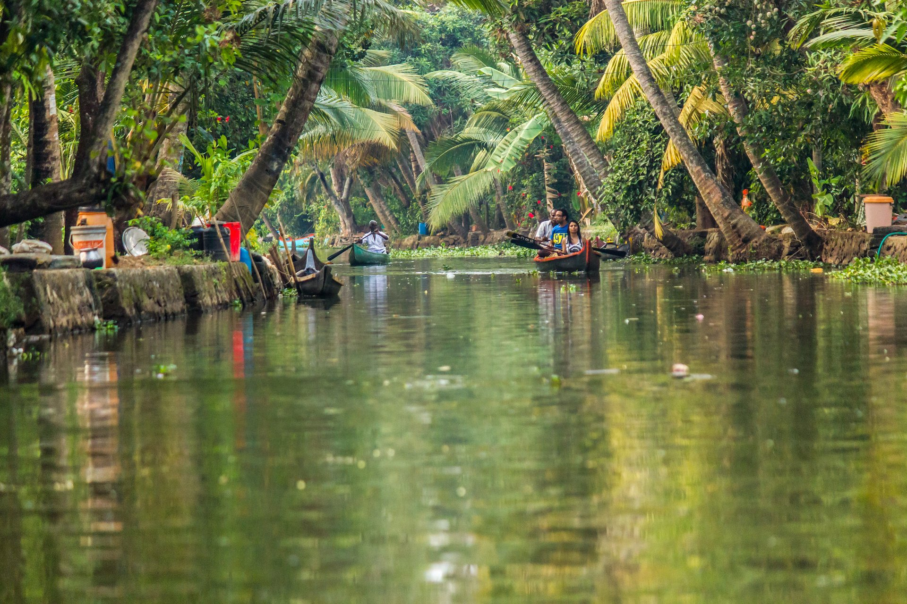
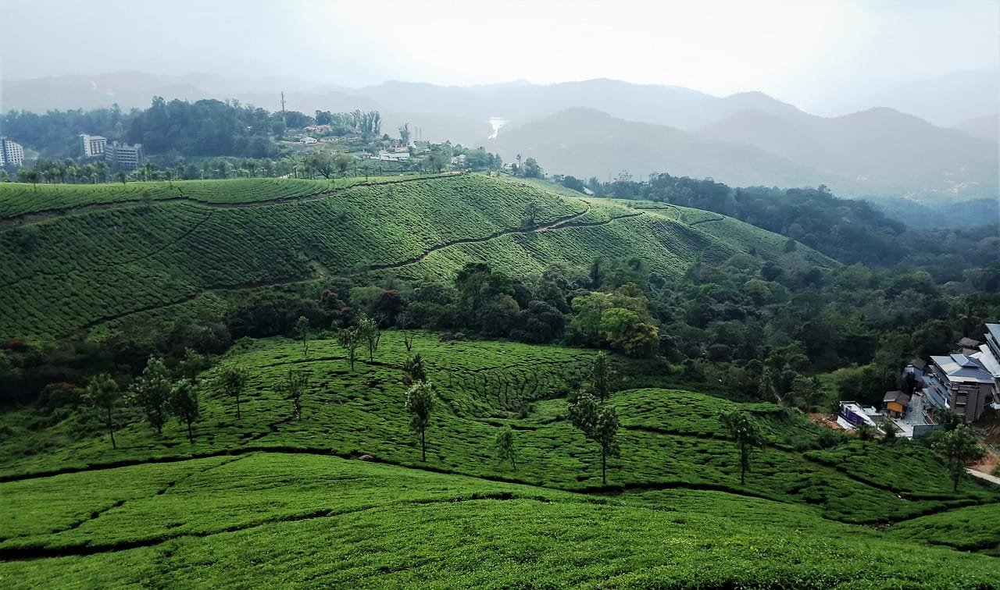
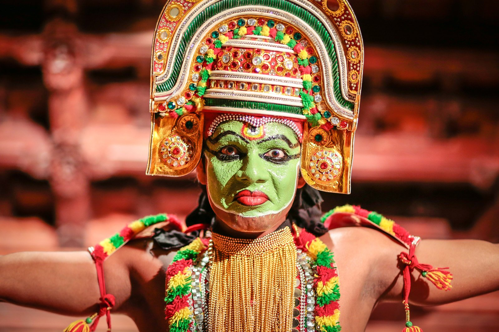

文化・歴史
7/10
カタカリ舞踊、ポルトガル・オランダ統治の名残、アーユルヴェーダ。世界遺産級の建築は少なめ。

04 / 05 — ケーララ州（南インド）
ヤシの水路を、一泊二日の船旅で。
“God's Own Country” を名乗る南インドの緑の州。ヤシに囲まれた水郷を行くハウスボート、霧の茶畑ムンナール、港町フォート・コーチン。北インドとはまるで別の国のような、穏やかで優しいインドに出会えます。
നമസ്കാരംNamaskaramこんにちは（マラヤーラム語）
Is it for you?
Multi-angle evaluation
78.8/100 バランス型の総合点
自然・絶景と安心・快適が突出。弱点はアクセス（6/10）。
20,000通りのランダムな価値観で試すと、1位になる確率 32.0%・2位以内 50.0%
7/10
カタカリ舞踊、ポルトガル・オランダ統治の名残、アーユルヴェーダ。世界遺産級の建築は少なめ。
9/10
総延長900km超とされる水郷バックウォーター、ムンナールの茶畑、アラビア海のビーチ。
6/10
食堂や移動は安いが、ハウスボート1泊（食事付き）は1隻₹8,000〜が目安。数人で割ると現実的。
6/10
日本からはデリーやベンガルールで乗継。コーチン国際空港から各地へは車で2〜4時間。
9/10
識字率が高く客引きも穏やか。インド初心者や女性旅行者にも評判が良い。
9/10
バナナの葉に盛るサディヤ、ココナッツのシーフードカレー、ドーサ。南インド料理の本場。
8/10
ハウスボート宿泊、カヌーで細水路探検、茶畑トレッキング、アーユルヴェーダ体験。
9/10
水鏡に映るヤシ並木、夕日とチャイニーズ・フィッシングネット、カタカリの化粧。
Highlights
01体験
伝統的な米運搬船「ケットゥヴァッラム」を改装した船に泊まり、水郷をゆっくり進む。船上で作られるカレーと、静寂の夜。

02体験
ハウスボートが入れない細い水路へ小舟で。洗濯する人、学校へ向かう子ども、水辺の生活がすぐそこに。

03絶景
標高約1,600mの高原一面に広がる茶畑。涼しく、紅茶博物館での工場見学や日の出トレッキングも。
04風景
中国から伝わったとされる巨大な四つ手網。夕暮れのシルエットはフォート・コーチンの象徴。

05伝統芸能
緑の化粧と巨大な衣装で神話を演じる古典舞踊劇。開演前の化粧から見学できる劇場もある。
Model itinerary
大学生の個人旅行を想定した、無理のない日程です。
現地費用の目安
¥23,000〜¥45,000
4〜5日・宿／食事／移動／入場料（航空券除く）
1日 ₹3,500〜5,500（¥5,800〜¥9,100）
コーチン空港に到着。フォート・コーチンの旧市街を散策し、夕日のフィッシングネット。夜はカタカリ鑑賞。
車で約1.5時間のアレッピーへ。昼にハウスボートに乗船し、水郷を巡りながら船上で一泊。
朝の水郷をカヌーで探検。午後は車でムンナールへ（約4〜5時間）。
茶畑トレッキングと紅茶博物館。涼しい高原でゆっくり過ごす。
コーチンへ戻り、スパイス市場で紅茶やスパイスのお土産を。
Eat
バナナの葉に20品以上を盛るお祝いのごちそう。
水郷の魚をバナナの葉で包み焼き。
米粉のふわふわクレープとココナッツシチュー。
何層にも重なるサクサクのパン。
南インド式の定食。おかわり自由の店が多い。
When to go
大学の長期休み（春休み・GW・夏休み・冬休み）の目安
Getting there
Tips & cautions
6〜9月はモンスーン。雨は多いが、アーユルヴェーダには最適の季節とされ、宿も割安に。
ハウスボートは部屋数・食事・エアコン時間で値段が大きく変わる。複数社で見積もりを。
5地域でいちばん客引きが穏やか。「インドは怖い」という人に最初に勧めたい場所。
蚊が多い地域。デング熱対策に虫除けと長袖を。
Sources
情報確認日: 2026-09-24。最新情報は必ず公式サイトで確認してください。